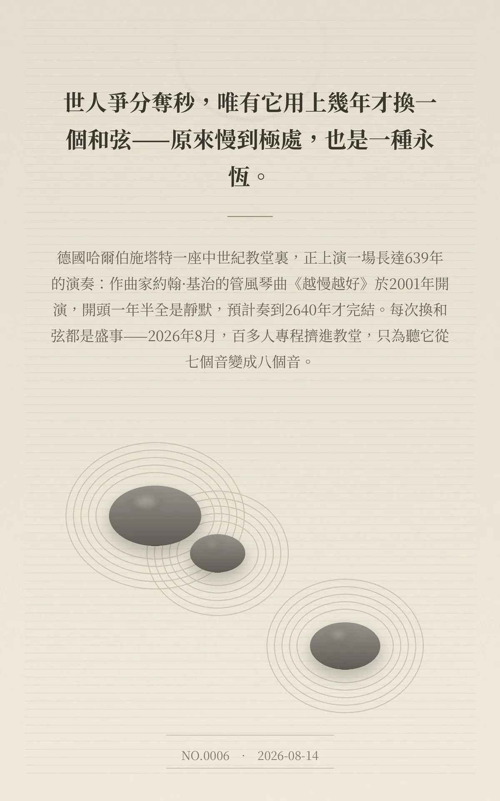

世人爭分奪秒，唯有它用上幾年才換一個和弦——原來慢到極處，也是一種永恆。
德國哈爾伯施塔特一座中世紀教堂裏，正上演一場長達639年的演奏：作曲家約翰·基治的管風琴曲《越慢越好》於2001年開演，開頭一年半全是靜默，預計奏到2640年才完結。每次換和弦都是盛事——2026年8月，百多人專程擠進教堂，只為聽它從七個音變成八個音。
4acc7565422c75e7
冷知识由执笔的模型自行查证。逐条断言、来源与所引原句存档在纯文字副本里，未经程序逐字校验，留作事后核实。